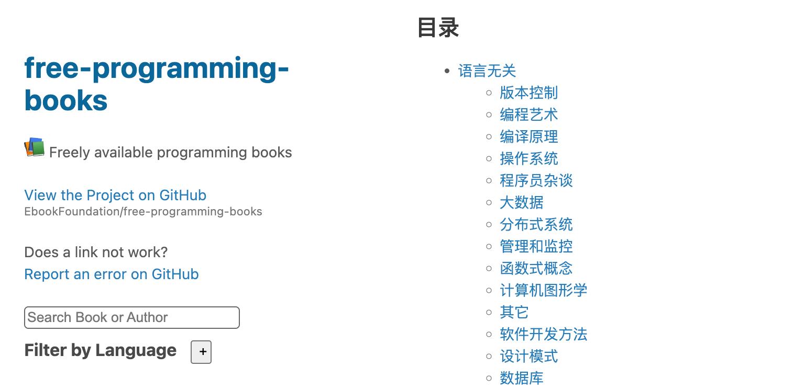

项目名: free-programming-books -- 各种编程语言免费学习资源
free-programming-books 是 GitHub 上的一个开源项目，旨在收集和分享免费的编程学习资源。这个项目包含了大量关于各种编程语言、框架、工具和计算机科学领域的免费电子书，涵盖了从初学者到高级开发人员的各个层次。
该项目的主要目标是为学习编程的人提供免费且高质量的学习资料，包括但不限于编程语言、算法、数据结构、数据库、前端和后端开发等方面的书籍和资料。
在这个项目中，我们可以找到各种编程相关的书籍，例如 Python、Java、JavaScript、C++ 等编程语言，以及关于 Web 开发、数据科学、人工智能、网络安全等不同领域的学习资源。

目录
- 语言无关
- 语言相关
语言无关
版本控制
- 沉浸式学 Git - Jim Weirich,
trl.:徐小东 a.k.a toy (:card_file_box: archived) - 猴子都能懂的GIT入门 - Nulab Inc.
- Git - 简易指南 - Roger Dudler,
trl.:罗杰·杜德勒 (HTML) - Git 参考手册 - CHEN Yangjian
- Git-Cheat-Sheet - flyhigher139
- git-flow 备忘清单 - Daniel Kummer, et al.
- Git Magic - Ben Lynn,
trl.:俊杰, 萌和江薇, et al. (HTML) - Git教程 - 廖雪峰
- Github帮助文档 - Way Lau
- GitHub秘籍 - snowdream86
- Got GitHub - Jiang Xin, The GotGit community
- GotGitHub - Jiang Xin, The GotGit community
- HgInit (中文版) - The HgInit team,
trl.:Brant Young - Mercurial 使用教程 - The Mercurial team
- Pro Git - Scott Chacon, Ben Straub,
trl.:Alan Wang,trl.:啊咪咪小熊, et al. (HTML, PDF, EPUB) - Pro Git 第二版 中文版 - Bingo Huang
- Subversion 版本控制 - Ben Collins-Sussman, Brian W. Fitzpatrick, C. Michael Pilato
编程艺术
编译原理
操作系统
- 开源世界旅行手册
- 理解Linux进程
- 命令行的艺术
- 鸟哥的 Linux 私房菜 服务器架设篇
- 鸟哥的 Linux 私房菜 基础学习篇
- 嵌入式 Linux 知识库 (eLinux.org 中文版)
- Docker — 从入门到实践
- Docker入门实战
- Docker中文指南
- FreeBSD 使用手册
- Linux 构建指南
- Linux 系统高级编程
- Linux Documentation (中文版)
- Linux Guide for Complete Beginners
- Linux工具快速教程
- Mac 开发配置手册
- Operating Systems: Three Easy Pieces
- The Linux Command Line
- Ubuntu 参考手册
- uCore Lab: Operating System Course in Tsinghua University
- UNIX TOOLBOX (:card_file_box: archived)
程序员杂谈
大数据
分布式系统
- 走向分布式 (PDF)
管理和监控
- ElasticSearch 权威指南
- Elasticsearch 权威指南（中文版） (:card_file_box: archived)
- ELKstack 中文指南
- Logstash 最佳实践
- Mastering Elasticsearch(中文版)
- Puppet 2.7 Cookbook 中文版
函数式概念
计算机图形学
其它
软件开发方法
- 傻瓜函数编程 (《Functional Programming For The Rest of Us》中文版)
- 硝烟中的 Scrum 和 XP
设计模式
数据库
项目相关
在线教育
- 51CTO学院
- 黑马程序员
- 汇智网
- 极客学院
- 计蒜客
- 慕课网
- Codecademy
- CodeSchool
- Coursera
- Learn X in Y minutes
- shiyanlou
- TeamTreeHouse
- Udacity
- xuetangX
正则表达式
智能系统
IDE and editors
- 大家來學 VIM - Edward Lee
- 所需即所获：像 IDE 一样使用 vim - yangyangwithgnu
- exvim--vim 改良成IDE项目
- IntelliJ IDEA 简体中文专题教程 - Judas.n
- Vim中文文档 - Vim 中文计划, Yian Willis
Web
- 浏览器开发工具的秘密
- 前端代码规范 及 最佳实践
- 前端开发体系建设日记
- 前端资源分享（二）
- 前端资源分享（一）
- 移动前端开发收藏夹
- 移动Web前端知识库
- 正则表达式30分钟入门教程
- Chrome 开发者工具中文手册
- Chrome扩展及应用开发
- Chrome扩展开发文档
- Growth: 全栈增长工程师指南
- Grunt中文文档
- Gulp 入门指南
- gulp中文文档
- HTTP 接口设计指北
- JSON风格指南
- Wireshark用户手册
WEB服务器
- Apache 中文手册
- Nginx教程从入门到精通 - 运维生存时间 (PDF)
- Nginx开发从入门到精通 - 淘宝团队
语言相关
Android
- Android Note(开发过程中积累的知识点)
- Android开发技术前线(android-tech-frontier)
- Google Material Design 正體中文版 - Tillonter, 陳世能, Sean Chen, et al.
- Google Material Design 中文协同翻译 - 1sters 极客实验室, 四勾 4J, IceskYsl, et al.
- Point-of-Android
Assembly
- 逆向工程权威指南 《Reverse Engineering for Beginners》 - Dennis Yurichev, Antiy Labs, Archer
- 逆向工程权威指南 《Reverse Engineering for Beginners》 Vol.1 - Dennis Yurichev, Antiy Labs, Archer (PDF)
- 逆向工程权威指南 《Reverse Engineering for Beginners》 Vol.2 - Dennis Yurichev, Antiy Labs, Archer (PDF)
- C/C++面向WebAssembly编程 - Ending, Chai Shushan (HTML, :package: examples)
AWK
C
- 新概念 C 语言教程
- Beej's Guide to Network Programming 簡體中文版 - Brian "Beej Jorgensen" Hall, 廖亚伦译
- C 语言常见问题集
- Linux C 编程一站式学习 (:card_file_box: archived)
C\
C++
- 100个gcc小技巧
- 100个gdb小技巧
- 简单易懂的C魔法 (:card_file_box: archived)
- 現代 C++ 101 - Lumynous (:construction: in process)
- 像计算机科学家一样思考（C++版) (《How To Think Like a Computer Scientist: C++ Version》中文版)
- C 语言编程透视
- C/C++ Primer - andycai
- C++ 并发编程指南
- C++ FAQ LITE(中文版)
- C++ Primer 5th Answers
- C++ Template 进阶指南
- CGDB中文手册
- Cmake 实践 (PDF)
- GNU make 指南
- Google C++ 风格指南
- ZMQ 指南
CoffeeScript
Dart
- Dart 语言导览 (:card_file_box: archived)
Elasticsearch
- Elasticsearch 权威指南 （《Elasticsearch the definitive guide》中文版）
- Mastering Elasticsearch(中文版)
Elixir
- Elixir 编程语言教程 (Elixir School)
- Elixir Getting Started 中文翻译
- Elixir元编程与DSL 中文翻译
- Phoenix 框架中文文档
Erlang
- Erlang 并发编程 (《Concurrent Programming in Erlang (Part I)》中文版)
Fortran
Golang
- 深入解析 Go - tiancaiamao
- 学习Go语言
- Go 编程基础
- Go 官方文档翻译
- Go 简易教程 - Karl Seguin,
trl.:Song Song Li (《The Little Go Book - Karl Seguin》中文版) - Go 命令教程
- Go 入门指南 (《The Way to Go》中文版)
- Go 语法树入门
- Go 语言标准库
- Go 语言高级编程（Advanced Go Programming）
- Go 语言设计与实现 - draveness
- Go 语言实战笔记
- Go 指南 (《A Tour of Go》中文版)
- Go Web 编程 - astaxie
- Go实战开发
- Go语言博客实践
- Java程序员的Golang入门指南
- Network programming with Go 中文翻译版本
- Revel 框架手册 (:card_file_box: archived)
- The Little Go Book 繁體中文翻譯版 - Karl Seguin,
trl.:KevinGo, Jie Peng (HTML)
Groovy
- Groovy 教程 - W3Cschool
Haskell
HTML and CSS
- 前端代码规范 - 腾讯AlloyTeam团队
- 通用 CSS 笔记、建议与指导
- 学习CSS布局
- Bootstrap 4 繁體中文手冊 - 六角學院
- Bootstrap 5 繁體中文手冊 - 六角學院
- CSS3 Tutorial 《CSS3 教程》
- CSS参考手册
- Emmet 文档
- HTML5 教程
- HTML和CSS编码规范
- Sass Guidelines 中文
iOS
- 网易斯坦福大学公开课：iOS 7应用开发字幕文件
- Apple Watch开发初探
- Google Objective-C Style Guide 中文版
- iOS开发60分钟入门
- iPhone 6 屏幕揭秘
Java
- 阿里巴巴 Java 开发手册.pdf) (PDF)
- 用jersey构建REST服务
- Activiti 5.x 用户指南
- Apache MINA 2 用户指南
- Apache Shiro 用户指南
- Google Java编程风格指南
- H2 Database 教程
- Java 编程思想 - quanke
- Java 编码规范
- Java 教程 - 廖雪峰的官方网站
- Java Servlet 3.1 规范
- Jersey 2.x 用户指南
- JSSE 参考指南
- MyBatis中文文档
- Netty 4.x 用户指南
- Netty 实战(精髓)
- Nutz-book Nutz烹调向导
- Nutz文档
- REST 实战
- Spring 2.0核心技术与最佳实践 (PDF)
- Spring Boot参考指南 (:construction: 翻译中)
- Spring Framework 4.x参考文档
JavaScript
- 命名函数表达式探秘 - kangax、为之漫笔(翻译) (原始地址无法打开，所以此处地址为justjavac博客上的备份)
- 你不知道的JavaScript
- 现代 JavaScript 教程 - Ilya Kantor
- 学用 JavaScript 设计模式 - 开源中国
- Airbnb JavaScript 规范
- ECMAScript 6 入门 - 阮一峰
- Google JavaScript 代码风格指南 (:card_file_box: archived)
- JavaScript 标准参考教程（alpha）
- javascript 的 12 个怪癖
- JavaScript 教程 - 廖雪峰的官方网站
- 《JavaScript 模式》 (《JavaScript patterns》译本)
- JavaScript 原理
- JavaScript Promise迷你书
AngularJS
:information_source: See also … Angular
- 构建自己的AngularJS - Xu Fei (HTML)
- 在Windows环境下用Yeoman构建AngularJS项目 - Way Lau (HTML)
- AngularJS入门教程 - Yan Qing, Hou Zhenyu, 速冻沙漠 (HTML) (:card_file_box: archived)
- AngularJS最佳实践和风格指南 - Minko Gechev, Xuefeng Zhu, Shintaro Kaneko, et al. (HTML)
Backbone.js
- Backbone.js入门教程 (PDF)
- Backbone.js入门教程第二版
- Backbone.js中文文档 (:card_file_box: archived)
D3.js
- 楚狂人的D3教程
- 官方API文档
- Learning D3.JS - 十二月咖啡馆
Electron.js
- Electron 中文文档 - WizardForcel
- Electron 中文文档 - W3Cschool
ExtJS
jQuery
- 简单易懂的JQuery魔法 (:card_file_box: archived)
- How to write jQuery plugin
Node.js
- 七天学会NodeJS - 阿里团队
- 使用 Express + MongoDB 搭建多人博客
- express.js 中文文档
- Express框架
- koa 中文文档
- Learn You The Node.js For Much Win! (中文版)
- Node debug 三法三例
- Node.js 包教不包会
- Node.js Fullstack《從零到一的進撃》
- Node入门
- Nodejs Wiki Book (繁体中文)
- nodejs中文文档
- The NodeJS 中文文档 - 社区翻译
React.js
- Learn React & Webpack by building the Hacker News front page
- React-Bits 中文文档
- React webpack-cookbook
- React.js 入门教程
- React.js 中文文档
Vue.js
- Vue3.0学习教程与实战案例 - chengpeiquan
Zepto.js
- Zepto.js 中文文档 (:card_file_box: archived)
LaTeX
- 大家來學 LaTeX (PDF)
- 一份不太简短的 LaTeX2ε 介绍
Lisp
- ANSI Common Lisp 中文翻译版
- Common Lisp 高级编程技术 (《On Lisp》中文版)
Lua
Markdown
MySQL
NoSQL
- 带有详细注释的 Redis 2.6 代码
- 带有详细注释的 Redis 3.0 代码
- Disque 使用教程
- Redis 命令参考
- Redis 设计与实现
- The Little MongoDB Book
- The Little Redis Book
Perl
PHP
- CodeIgniter 使用手冊 (:card_file_box: archived)
- Composer中文文档
- Phalcon7中文文档 (:card_file_box: archived)
- PHP 之道
- PHP标准规范中文版
- PHP中文手册
- Yii2中文文档
Laravel
Symfony
- Symfony 2 实例教程
- Symfony 5 快速开发 (:card_file_box: archived)
PostgreSQL
- PostgreSQL 8.2.3 中文文档
- PostgreSQL 9.3.1 中文文档
- PostgreSQL 9.4.4 中文文档
- PostgreSQL 9.5.3 中文文档
- PostgreSQL 9.6.0 中文文档
Python
- 简明 Python 教程 - Swaroop C H、沈洁元(翻译)、漠伦(翻译) (:card_file_box: archived)
- 人生苦短，我用python - zhang_derek (内含丰富的笔记以及各类教程)
- 深入 Python 3
- Matplotlib 3.0.3 中文文档 (Online)
- Numpy 1.16 中文文档 (Online)
- Python 3 文档(简体中文) 3.2.2 documentation
- Python 3.8.0a3中文文档 (Online) (目前在线最全的中文文档了)
- Python 中文学习大本营
- Python 最佳实践指南
- Python Cookbook第三版 - David Beazley、Brian K.Jones、熊能(翻译)
- Python教程 - 廖雪峰的官方网站
- Python进阶 - eastlakeside
- Python之旅 - Ethan (:card_file_box: archived)
- Tornado 6.1 中文文档 (Online) (网络上其他的都是较旧版本的)
Django
- Django 1.11.6 中文文档
- Django 2.2.1 中文文档 (Online) (这个很新，也很全)
- Django 搭建个人博客教程 (2.1) - 杜赛 (HTML)
- Django book 2.0
- Django Girls 教程 (1.11) (HTML)
R
- 153分钟学会 R (PDF)
- 统计学与 R 读书笔记 (PDF)
- 用 R 构建 Shiny 应用程序 (《Building 'Shiny' Applications with R》中文版) (:card_file_box: archived)
- R 导论 (《An Introduction to R》中文版) (PDF)
reStructuredText
Ruby
Rust
Scala
- Effective Scala
- Scala 课堂 (Twitter的Scala中文教程)
Scheme
- Scheme 入门教程 (《Yet Another Scheme Tutorial》中文版)
Scratch
Shell
Swift
TypeScript
- TypeScript 教程 - runoob (HTML)
- TypeScript 入门教程 - runoob (HTML)
- TypeScript 中文网 (HTML)
- TypeScript Deep Dive 中文版 - 三毛 (HTML)
- TypeScript Handbook（中文版） - Patrick Zhong (HTML)
Angular
:information_source: See also … AngularJS
- Angular 文档简介 - Wang Zhicheng, Ye Zhimin, Yang Lin et al. (HTML)
- Angular Material 组件库 - Wang Zhicheng, Ye Zhimin, Yang Lin, et al. (HTML)
- Angular Tutorial (教程：英雄之旅) - Wang Zhicheng, Ye Zhimin, Yang Lin, et al. (HTML)
Deno
- Deno 钻研之术
- Deno进阶开发笔记 - 大深海

点我分享笔记